Retail IT Analytic Document Manager
This module lets you split costs and revenue across more than one analytic account on Sales Orders, Purchase Orders, Point of Sale, Invoices, Vendor Bills, and Bank Reconciliation — and, for your online store and your tills, applies the right account automatically without anyone having to remember to set it.
1. Overview
Standard Odoo lets you assign one analytic account to a document or line. That works fine when every order or bill belongs to a single cost centre, brand, or department — but it breaks down the moment revenue or cost needs to be split across more than one, or when it needs to change depending on which website an order came from. This module adds that flexibility on top of Odoo's standard tools, using native multi-account distributions (a percentage split across one or more analytic accounts) rather than a single hardcoded account.
What it solves
A single "Analytic Distribution" field is added to the header of Sales Orders, Purchase Orders, and Invoices/Bills, plus a default distribution per Point of Sale. Set it once, and it can be pushed down to every line in one click — or, in several cases, applied automatically in the background.
Where it shows up
Website eCommerce order coding, Sales Orders, Purchase Orders, Point of Sale, Customer Invoices, Vendor Bills, and the Bank Matching (reconciliation) screen. Each is covered in its own section below.
Required Odoo apps
Installing this module also installs the apps below, if they aren't already in your database. Nothing further needs to be installed manually — this is just so you know what's being added alongside it.
| App / Feature | Why this module needs it |
|---|---|
| Accounting / Invoicing | Core app — Customer Invoices, Vendor Bills, and Analytic Accounting all live here. |
| Sales | Adds the Analytic Distribution field and Apply Analytic button to Sales Orders. |
| Purchase | Adds the Analytic Distribution field and Apply Analytic button to Purchase Orders. |
| Website / eCommerce | Needed for the per-website analytic account mapping and the Sweep action described in Configuration. |
| Accounting (Bank Reconciliation) | Powers the Bank Matching screen the bulk Apply Analytic action is added to — see Bank Matching. |
| Invoice digitization ("Digitize documents") | Not used directly by this module, but its presence is the reason Customer Invoices and Vendor Bills use a pop-up wizard instead of an inline field — see Customer Invoices & Vendor Bills. |
| Point of Sale | Adds the default Analytic Distribution setting per till and the per-line override — see Point of Sale. |
2. Configuration
Before eCommerce orders can be coded automatically, each website needs to be mapped to the analytic account it should use.
Setting up a website mapping
Go to Website → Configuration → eCommerce → Analytic Accounts.
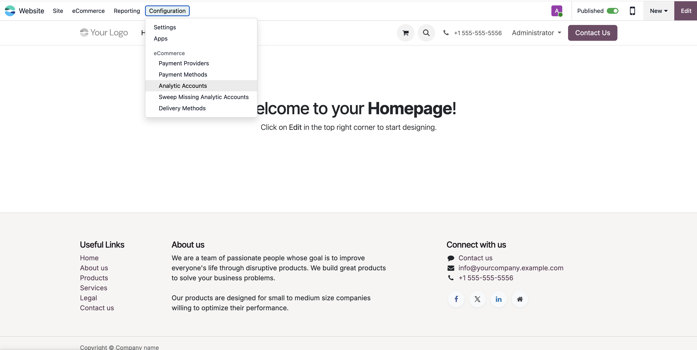
Configuration > eCommerce > Analytic Accounts menu">- Open the Analytic Accounts list.
- Click New and choose the Website this mapping applies to.
- Choose the Analytic Account that should be used for every order placed on that website.
- Save.
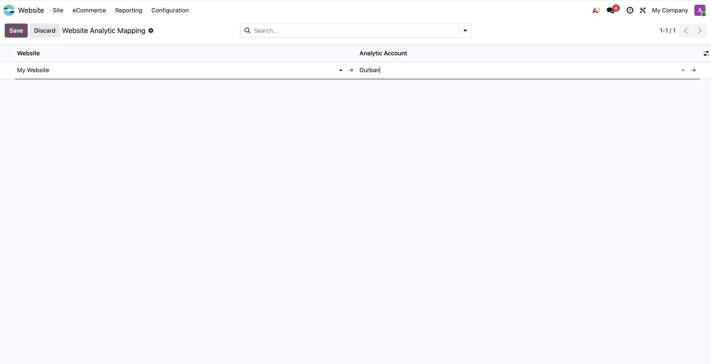
What happens automatically
Once a website has a mapping, every new Sales Order created for that website is coded the moment it's created — no button click needed:
- The order's header Analytic Distribution is set to 100% on the mapped account.
- That distribution is immediately applied to every order line.
This also carries forward automatically after the fact: if a line is added to that order later (for example, a manual adjustment) and doesn't already have its own distribution, it will pick up the order's distribution as soon as it's saved.
Sweep Missing Analytic Accounts
Use this to backfill older orders and invoices that predate a mapping, or
that were missed for any reason. It's found at
Website → Configuration → eCommerce → Sweep Missing Analytic Accounts.
- Click the menu item — it runs immediately, there is no confirmation screen.
- A notification appears summarising how many Sales Orders, order lines, invoices, and invoice lines were updated.
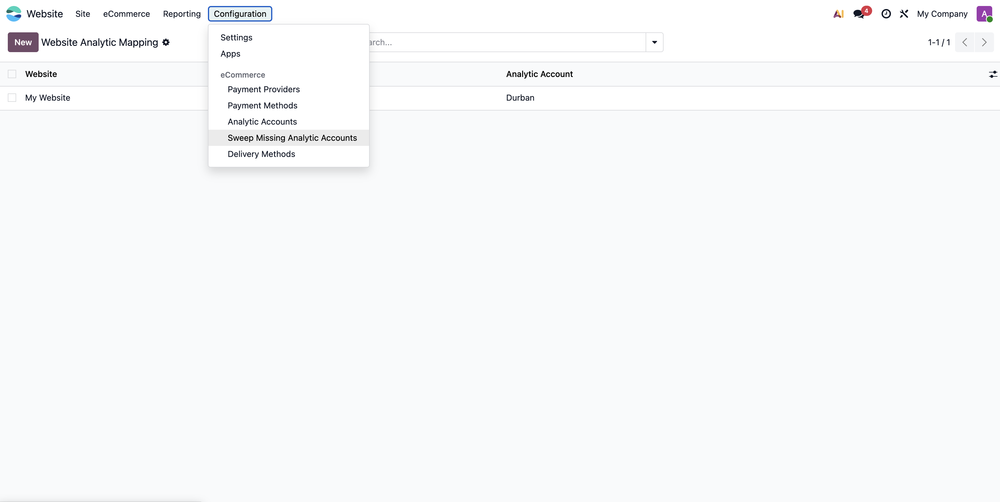
| What it checks | What it does |
|---|---|
| Sales Orders tied to a mapped website | Fills in the header distribution if missing, and fills in any line without one. |
| Customer Invoices linked to those orders | Fills in the header distribution if missing (falling back to the originating order's mapping), then fills in any product line without one. |
3. Sales Orders
An Analytic Distribution field appears on the order header, next to the Customer field.
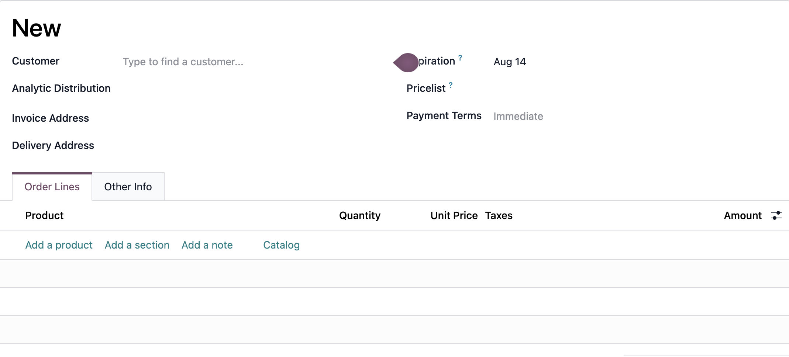
- Open the field and choose one or more analytic accounts.
- If splitting across more than one account, enter the percentage for each — they should add up to 100%.
- Click Apply Analytic in the header button bar.
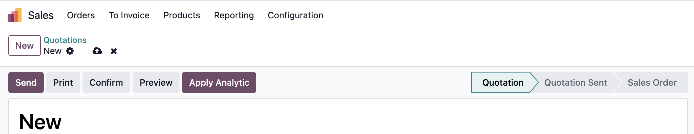
If you click Apply Analytic without first setting a header distribution, Odoo will show an error asking you to set one first.
Lines added after applying
Once an order has a header distribution, any new line you add afterwards is coded automatically as soon as it's saved — as long as that line doesn't already have its own distribution. You don't need to click Apply Analytic again for new lines; that button is really only needed the first time, or when you want to force-overwrite lines that were coded differently.
What happens when the order is invoiced
The order's header distribution is copied onto the header of the invoice that gets generated. From there, the invoice's own automatic coding (see Customer Invoices & Vendor Bills) fills in any invoice line that doesn't already have a distribution — so in most cases the invoice arrives already coded, with nothing further to do.
4. Purchase Orders
The same pattern applies to Purchase Orders. An Analytic Distribution field appears on the header, next to the Vendor Reference field.
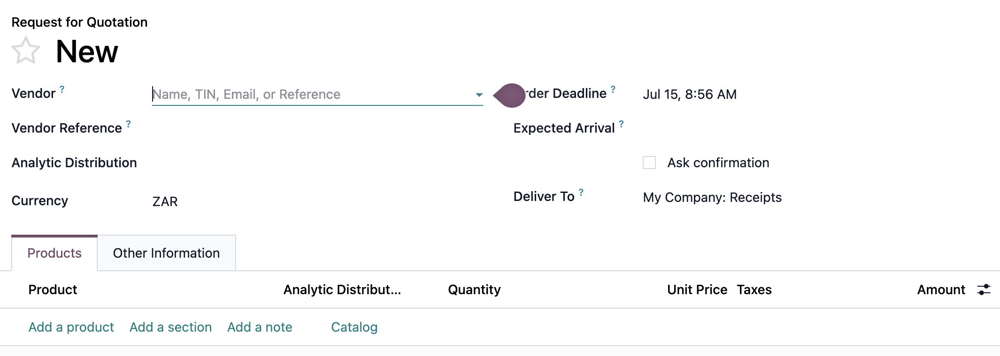
- Open the field and set the split across one or more analytic accounts.
- Click Apply Analytic in the header button bar.
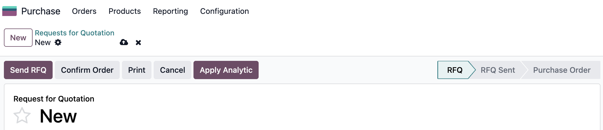
What happens when the order is billed
As with Sales Orders, the header distribution is copied onto the header of the Vendor Bill that gets generated, and the bill's own automatic coding then fills in any bill line that doesn't already have a distribution.
5. Point of Sale
Point of Sale works differently from Sales Orders and Purchase Orders: instead of a header field you set per document, you set one default distribution per till, and every order rung up on that till is coded with it automatically — no button to click.
Setting the default for a till
This can be set from either of two places — both edit the same setting, so use whichever is more convenient:
-
From the till itself:
Point of Sale → Configuration → Point of Sale, open the till, and find Analytic Distribution near the connected-devices settings. -
From the shared settings screen:
Point of Sale → Configuration → Settings, choose the till from the selector at the top of the page, and find the same Analytic Distribution setting.
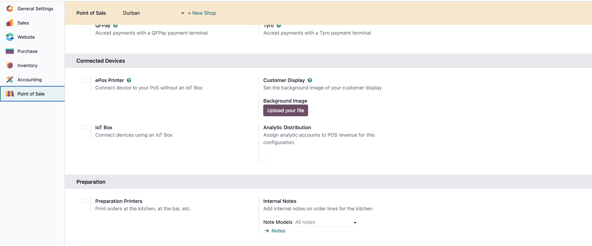
What happens automatically
As soon as a line is added to a new order on that till, it's coded with the till's default distribution — this happens in the background as orders are created, not something a cashier does at the register. If a line already carries its own distribution, the default is not applied over it.
Overriding a line
Individual order lines can be given their own distribution, overriding the till's default. This isn't done at the till itself — it's a back-office adjustment made afterward, from the order's record in the backend:
- Go to
Point of Sale → Orders → Ordersand open the order. - On the order lines list, the Analytic Distribution column is present but hidden by default — use the column picker (the icon at the top-right of the list) to show it.
- Set the distribution on the line that needs it.

Where the distribution ends up
| Situation | Which distribution is used |
|---|---|
| Order line, when created | The till's default, unless the line is given its own. |
| Invoice generated for a POS order (customer requests an invoice) | The line's own distribution if it has one, otherwise the till's default. |
| Sales journal entry created when a cashier's session is closed | Always the till's default — line-level overrides do not carry into this entry. |
6. Customer Invoices & Vendor Bills
Invoices and bills use a small pop-up window instead of a field on the form itself, because Odoo's "Digitize documents" (OCR) feature does not get along with that field being placed directly on the invoice screen.
Using the Apply Analytic wizard
- Open the Customer Invoice or Vendor Bill.
- Click Apply Analytic in the header button bar.
- In the pop-up, set the distribution across one or more analytic accounts.
- Click Apply.
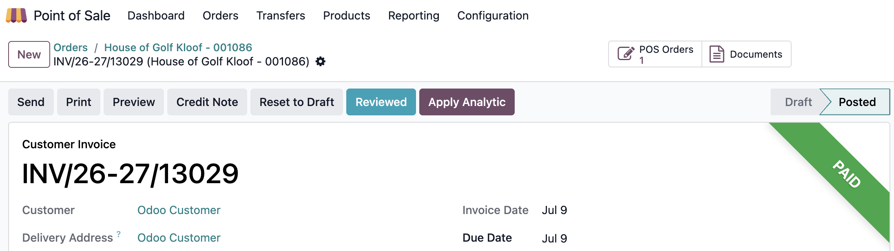
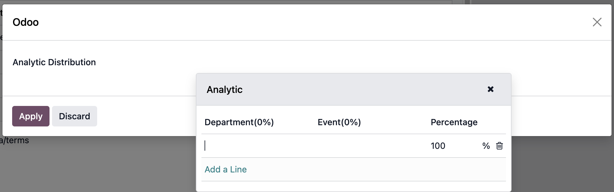
What it applies to
Only genuine product lines. Tax and VAT lines are never touched by this field, whether it's applied through the pop-up or set automatically — so if you need a tax line coded to a specific analytic account, that has to be done on the tax line itself, separately.
Automatic coding
If an invoice or bill already has a header distribution when it's created — most commonly because it was generated from a Sales Order or Purchase Order that had one — any product line without its own distribution is filled in automatically at that point. This only fills gaps; it never overwrites a line that already has a distribution.
7. Bank Matching
Found at Accounting → Reconciliation (the Bank Matching
screen).
- Select two or more transactions using the screen's native multi-select (e.g. Ctrl/Cmd-click, or Shift-click for a range).
- Click Apply Analytic in the bulk-action toolbar that appears once transactions are selected, alongside the native Set Partner / Set Account buttons.
- In the pop-up, set the distribution and click Apply.
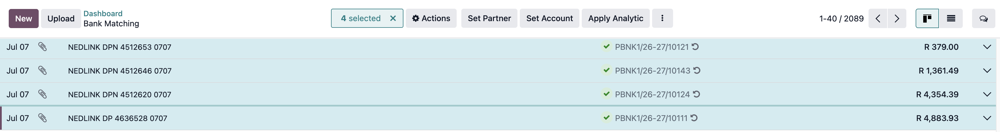
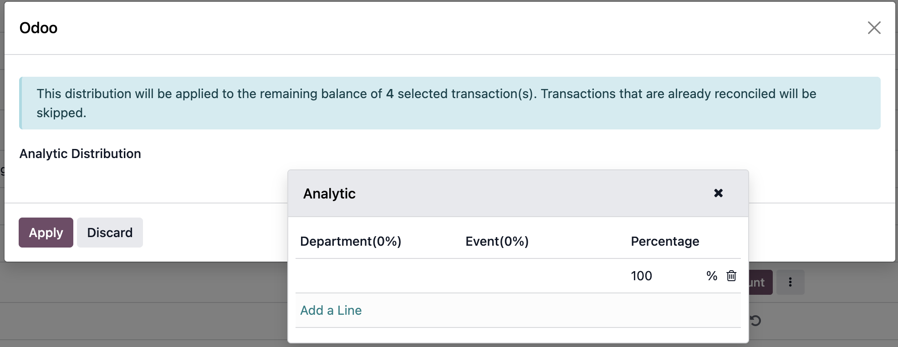
When a transaction has both a fee line and an auto-generated VAT/tax line (typical of a reconcile model that both splits and reconciles in one step), both lines are updated with the chosen distribution. Only the bank/liquidity line itself is left alone.
8. Permissions
| Feature | Who can use it |
|---|---|
| Website Analytic Mapping (create/edit/delete) | Administrators / users with Settings access only. |
| Website Analytic Mapping (view only) | Any internal user can see the list, but cannot add, edit, or remove entries. |
| Apply Analytic pop-up (Invoices/Bills and Bank Matching) | Any internal user. |
| Sales Order / Purchase Order header field and Apply Analytic button | Not separately restricted by this module — governed by whatever access a user already has to Sales Orders or Purchase Orders. |
| Sweep Missing Analytic Accounts | Reachable by anyone with access to the Website eCommerce configuration menu; the sweep itself runs with elevated permissions internally, so it is not limited to the same users who can edit mappings. Worth confirming this matches your intended access model. |
| Point of Sale default distribution (till or Settings screen) and the per-line override on an order | Only visible to users with the Analytic Accounting feature enabled — otherwise not restricted beyond normal Point of Sale access. |
9. Known Limitations
- Invoices/Bills use a pop-up, not an inline field. This is because Odoo's "Digitize documents" (OCR) feature does not work correctly if the distribution field sits directly on the invoice/bill form — it's kept in a separate pop-up window to avoid that conflict.
- Manual "Apply" always overwrites; automatic coding never does. Clicking Apply Analytic on a Sales Order, Purchase Order, or Invoice/Bill overwrites every line's distribution, even lines that were already coded differently. Automatic coding — new eCommerce orders, new Sales Order lines, the Sweep action, and new invoice/bill lines created from a coded order — only ever fills in a blank distribution and never overwrites an existing one.
- Purchase Order lines don't auto-inherit. Unlike Sales Orders, adding a line to a Purchase Order after the header split has been applied does not automatically code that new line — Apply Analytic needs to be clicked again.
- Tax and VAT lines on invoices/bills are never coded by this field. Only product lines are affected, whether applied manually or automatically.
- Silent no-op on empty invoice/bill pop-up. Clicking Apply in the Invoice/Bill pop-up with no distribution chosen closes the window without applying anything and without showing an error.
- Locked accounting periods in Bank Matching. A fee or tax line belonging to a tax-locked period may be silently left unchanged when applying a bulk distribution — no on-screen error is shown for that case.
- Sweep requires at least one mapping. Running the sweep before any website mapping has been configured shows an error rather than doing nothing quietly.
- Session-closing journal entries always use the till's default. A per-line override on a Point of Sale order reaches an invoice generated for that order, but never reaches the summary revenue entry posted when the cashier's session is closed — that entry is always coded to the till's default distribution.
- Point of Sale distribution fields require the Analytic Accounting feature. Both the till's default setting and the per-line override are hidden from anyone who doesn't have that feature enabled, even if they otherwise have full Point of Sale access.
- Per-line Point of Sale overrides are a back-office action. There's no way to set or see the analytic split from the till screen itself — it can only be set afterward on the order in the backend, and the column showing it is hidden by default in the order lines list.
10. Best Practices
- Set up website mappings before go-live, not after. A mapping only codes orders placed once it exists — anything sold on a website before its mapping is created will need the Sweep action to catch up. Configure every live website's mapping as part of setup, not as an afterthought.
- Run the Sweep after adding or changing a mapping, not on a fixed schedule. It only fills gaps and won't touch anything already coded, so there's no harm in running it — but it's most useful right after a mapping changes, to catch anything sold in the meantime.
- Let automatic coding do the work; treat "Apply Analytic" as a deliberate override. New eCommerce orders, new Sales Order lines, and new invoice/bill lines code themselves without anyone clicking anything. Only click Apply Analytic when you actually mean to force every line back to the header split — remember it overwrites lines that were coded differently on purpose.
- Re-click Apply Analytic on a Purchase Order after adding lines. Unlike Sales Orders, new PO lines don't inherit the header split automatically. Make this the last step whenever lines are added to an already-coded PO.
- Check a line after using the Invoice/Bill Apply Analytic pop-up. Since clicking Apply with nothing chosen closes the window silently with no error, get in the habit of glancing at a product line afterward, especially when training someone new on it.
- Spot-check after a Bank Matching bulk apply, particularly around period-end. Transactions in a tax-locked period can be silently left unchanged. If you're applying a distribution to a large batch near a lock date, check a few afterward rather than assuming all of them took.
- Set each till's default distribution before its first session, not mid-shift. Every line created before the default is set will need coding by hand afterward; setting it in advance means the day's orders are coded automatically from the first sale.
- Don't rely on per-line Point of Sale overrides to change the session-closing entry. If a specific session's aggregate revenue genuinely needs to post to a different analytic split than the till's default, that has to be handled on the accounting entry itself — line overrides won't reach it.
- Keep website mapping edits with Administrators. Only Settings-level users can create or change a mapping, by design — treat it as a configuration decision, not something sales or store staff adjust themselves.